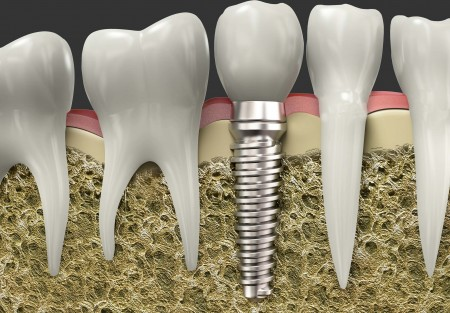
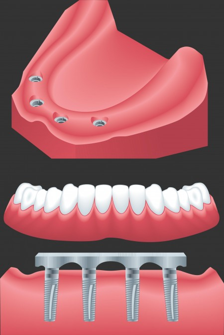

Dental implants are changing the way people live. They are designed to provide a foundation for replacement teeth that look, feel and function like natural teeth. They help preserve facial structure, preventing bone deterioration that occurs when teeth are missing. The person who has lost teeth regains the ability to eat virtually anything, knowing that teeth appear natural and that facial contours will be preserved. Patients with dental implants can smile with confidence.
Frequently Asked Questions About Dental Implants

What is a Dental Implant?
A dental implant is a metal screw that is placed into the jaw bone. It acts as an anchor for a false tooth or a set of false teeth. The slide to the right shows the replacement of a lateral incisor with a dental implant retained restoration.
The implants themselves are tiny titanium posts that are surgically placed into the jawbone where teeth are missing. These metal anchors act as tooth root substitutes. The bone bonds with the titanium, creating a strong foundation for artificial teeth. Small posts that protrude through the gums are then attached to the implant. These posts provide stable anchors for artificial replacement teeth.
Why Dental Implants?
Once you learn about dental implants, you finally realize there is a way to improve your life. When you lose several teeth — whether it is a new situation or something you have lived with for years — chances are you have never become fully accustomed to losing such a vital part of yourself.
Dental implants can be your doorway to renewed self-confidence and peace of mind.
A Swedish scientist and orthopedic surgeon, Dr. Per-Ingvar Branemark, developed this concept for oral rehabilitation more than 35 years ago. With his pioneering research, Dr. Branemark opened the door to a lifetime of renewed comfort and self-confidence for millions of individuals facing the frustration and embarrassment of tooth loss.
Dental implants are often the best choice for replacing missing teeth, as rather than resting on your gum line like normal dental appliances, they are
Why Select Dental Implants Over More Traditional Types of Restorations?
There are several reasons: Why sacrifice the structure of surrounding good teeth to bridge a space? In addition, removing a denture or a “partial” at night may be inconvenient, not to mention that dentures that slip can be uncomfortable and rather embarrassing.
Who Is A Candidate For Dental Implants?
Anyone in reasonable health who wants to replace missing teeth. You must have enough bone in the area of the missing teeth to provide for the anchorage of the implants. Some people are missing all their teeth and most of those are excellent candidates for dental implants, but today we use implants to replace small bridges, removable partial dentures and even missing single teeth.
If you are considering implants, your mouth must be examined thoroughly and your medical and dental history reviewed. If your mouth is not ideal for implants, ways of improving outcome (such as bone grafting) may be recommended.
What Is The Success Rate Of Dental Implants?
This depends very much on where the implants are placed and what they will be called upon to do. The best case scenario is the placement of implants in the front portion of the lower jaw. Here success can be as high as 98-100%. In other areas of the mouth, success rates can drop significantly. According to figures that we have today, the success of implants in the front part of the upper jaw are anywhere from 90-95%. Success rates of implants in the back part of the upper and lower jaw can be in the 85-95% range. The success rate in this practice for the past five years has been 99+% for all implants placed.
Why Have Dental Implants Become So Popular?
As our lifespan increases, the need for some type of permanent dental replacement system becomes very important to our overall health. Dentures and removable bridges have obvious problems: They are loose and unstable. Implants can provide people with dental replacements that are both functional and esthetic. The demand was always there, we just needed the tools to fulfill that demand.
Surgical Advances
Using the most recent advances in dental implant technology, Dr. Lee is able to place single stage implants. These implants do not require a second procedure to uncover them, but do require a minimum of six weeks of healing time before artificial teeth are placed. There are even situations where the implants can be placed at the same time as a tooth extraction – further minimizing the number of surgical procedures.
Dental Implant placement is a team effort between an oral and maxillofacial surgeon and a restorative dentist. While Dr. Lee performs the actual implant surgery (initial tooth extractions and bone grafting if necessary) the restorative dentist (your dentist) fits and makes the permanent prosthesis. Your dentist will also make any temporary prosthesis needed during the implant process.
The Surgical Procedure
For most patients, the placement of dental implants involves two surgical procedures. First, implants are placed within your jawbone. For the first three to six months following surgery, the implants are beneath the surface of the gums gradually bonding with the jawbone. You should be able to wear temporary dentures and eat a soft diet during this time. At the same time, your dentist is forming new replacement teeth.
After the implant has bonded to the jawbone the second phase begins. Dr. Lee will uncover the implants and attach small posts that protrude through the gums and will act as anchors for the artificial teeth. When the artificial teeth are placed, these posts will not be seen. The entire procedure usually takes six to eight months. Most patients experience minimal disruption in their daily life.

What Types Of Prosthesis Are Available?
A single prosthesis (crown) is used to replace one missing tooth – each prosthetic tooth attaches to its own implant. A partial prosthesis (fixed bridge) can replace two or more teeth and may require only two or three implants. A complete dental prosthesis (fixed bridge) replaces all the teeth in your upper or lower jaw. The number of implants varies depending upon which type of complete prosthesis (removable or fixed) is recommended. A removable prosthesis (over denture) attaches to a bar or ball in socket attachments, whereas a fixed prosthesis is permanent and removable only by the dentist.
Dr. Lee performs in-office implant surgery in a hospital-style operating suite, thus optimizing the level of sterility. Inpatient hospital implant surgery is for patients who have special medical or anesthetic needs or for those who need extensive bone grafting from the jaw, hip or tibia.
Does It Hurt To Have Dental Implants Placed?
The actual procedure to surgically place a dental implant is done under local anesthesia and is generally not at all painful. When the anesthesia wears off about three or four hours later, you might expect some discomfort. The level of discomfort is quite different from patient to patient, but most patients do not have significant problems. Some patients do have varying degrees of pain or discomfort which may last for several days. Swelling and black and bluing may also develop.
What Type Of Anesthesia Is Used?
The majority of dental implants and bone graft can be performed in the office under local anesthesia, with or without general anesthesia.
Bone Grafting
Sometimes when a dental implant is placed, it is necessary to build up the bone in the area to ensure success. The procedure of building up the bone is known as bone grafting. Bone grafting is a very common procedure in dentistry and it is used quite a bit for dental implants and in periodontal procedures around natural teeth. In order to do bone grafting, we need a source of bone to place in the site.
The bone that we use can be one of three types. The best bone is bone that is taken from the patient that we are working on. This bone can be taken from other areas of the mouth or collected in our suction apparatus as we drill into the bone to prepare the sites for dental implants. Occasionally this bone is taken from areas outside the mouth, such as the hip. When bone is taken from the hip, it is usually done in the hospital by an orthopedic surgeon and transferred to the dentist doing the implant procedure in the OR.
Another very common source of bone is bone taken from cadavers. This bone is harvested under very strict supervision at several bone banks around the country and it is used in many dental and medical procedures. There has never been a case of a transmitted disease with this type of bone. It is very safe and very useful in our work to help patients.
A third type of bone is a synthetic type of bone taken. This has some use in dentistry but it does not seem to be as useful as the first two types of bone.
Do I Have To Go Without My “Teeth” While The Implants Are Bonding To My Jaw Bone?
Once again, the original protocol called for patients to go without wearing their dentures for at least two weeks after implant placement. Over the years, this has been modified considerably and in most situations, patients leave the office wearing their teeth the day the implants are placed. Every patient and procedure is evaluated separately and there might occasionally be a recommendation that a patient go without their prosthesis for a short period of time.
How Long After A Dental Implant Is Placed Can It Be Used To Anchor My New Teeth?
The protocol that was originally developed clearly states that we must wait three months in the lower jaw and six months in the upper jaw before we can begin to construct the new dental prosthesis that will be supported by the implants. In recent years, however, there has been a movement within the profession to sort of speed up this process. Today we believe that it is possible in selected patients to accelerate the healing time. We are even loading implants in very specific situations right away. However, the general protocol that favored is 3 months in the lower jaw and 4 months in the upper jaw.
What Happens If I Have Dental Implants And They Are Rejected?
Occasionally dental implants do fail, or as some people say, they are rejected. In many instances, they can be replaced with another implant, usually of a slightly larger size. Failure rates should be about 1-2%.
Do Implants Need Special Care?
Once the implants are in place, they will serve you well for many years if you take care of them and keep your mouth healthy. This means taking the time for good oral hygiene (brushing and flossing) and keeping regular appointments with your dental specialists.
Who Should You See About Dental Implants?
An oral and maxillofacial surgeon is the most qualified specialist in the field of dental implants. Oral and maxillofacial surgeons are required to complete no less than 4 years of a hospital-based residency program involving surgical and anesthesia training after graduation from dental school. They are the only dental specialists recognized by the American Board of Dentistry who are required to fulfill such extensive training requirements. Their extensive training and knowledge offers a level of competency unmatchable in area of dental implants.